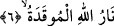

başlangıç cümlesi olup, bu caydırmanın sebebini beyân etmektedir. Buna göre âyetin
mânâsı şöyledir: Vallâhi, zikredilen fiilleri yaparak imkânsız bir şeyin olacağını
zanneden o kimse, mutlaka Hutame’ye atılacaktır.
Bazı âlimlere göre, “atılacak” olanlar arkadan çekiştiren ve yüze karşı
ayıplayanlardır. Bu mânâyı bâzı kırâat âlimlerinin fiili “o ikisi atılacaktır” diye tesniye
okumaları desteklemektedir.
“el-Hutame” kelimesinin anlamı; içine atılanı kırıp geçiren, paramparça eden
Cehennem demektir. Çünkü oraya atılan kişi de, dünyadayken insanların haysiyet ve
dokunulmazlıklarını aynı şekilde kırıp geçirmekte ve mal biriktirmekteydi.
Bazıları şöyle derler: “Hutame” kelimesinin kalıbı “fuale”, bir fiili çok yapmayı ve
alışkanlık hâline getirmeyi ifâde etmesi, “hutame” kelimesi ile çelişir. Çünkü “hutame”
ateşe isim olarak verilmiştir. Hâlbuki kırıp geçirmek ateşin âdeti değil, tabiatıdır. Bu
itiraza şöyle cevap vermek mümkündür. Ateşin içine atılanları kırıp geçirmesinin onun
tabiatı gereği olması, aynı zamanda âdeti olmasıyla çelişmez. Çünkü Kâmûs’un da ifâde
ettiği üzere âdet, şan, huy ve özellik demektir. Bu da tabiî olana da olmayana da
şâmildir. Buradan anlaşılıyor ki; onların hutameye atılmaları, yaptıkları amelin tam da
karşılığıdır. Çünkü hemz ve lemz onların âdetleri olunca, hatm yâni kırıp geçirmek de
ateşin âdeti olmuş olur. Öte yandan onlar, kendilerini değerli ve varlıklarının çok
olduğunu zannediyorlardı. Cezâlarının hakîr düşürücü ve varlıklarını alçaltıcı bir
şekilde ateşe atılmak olduğu bildirildi. Onları hakîr düşürmek, sayılarının ve mallarının
azlığını ifâde etmek için, kişinin tek avucuna alıp denize attığı çakıl taşlarına benzetti.
Burada onların fıtrat mertebesinden tabiat-ı ğâlibe mertebesine düşürüldüklerine işâret
vardır.
5. Hutame’nin ne olduğunu bilir misin?
Bu âyet, “Hutame”nin ne kadar korkunç olduğunu ve yaratıkların idraklerinin
almayacağı bir şey olduğunu vurgulamaktadır. Yâni “Hutame’nin ne olduğunu sana hangi
şey/kim bildirdi?”
6. Allah’ın tutuşturulmuş ateşidir.
O, Allah’ın emir ve kudretiyle tutuşturulmuş bir ateştir. Allah Teâlâ’nın emri ile
tutuşturulan bir ateşi O’ndan başka hiç kimse söndüremez. Burada “ateş”in Allah
Teâlâ’ya izâfe edilerek ‘Allah’ın ateşi’ denmesi, ateşe azamet katmak, ve diğer